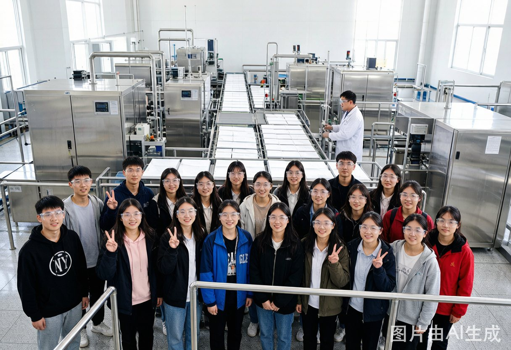
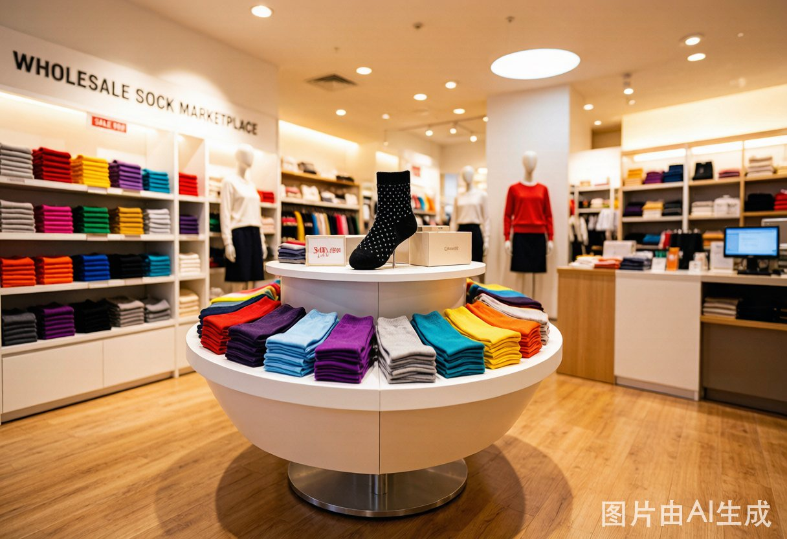
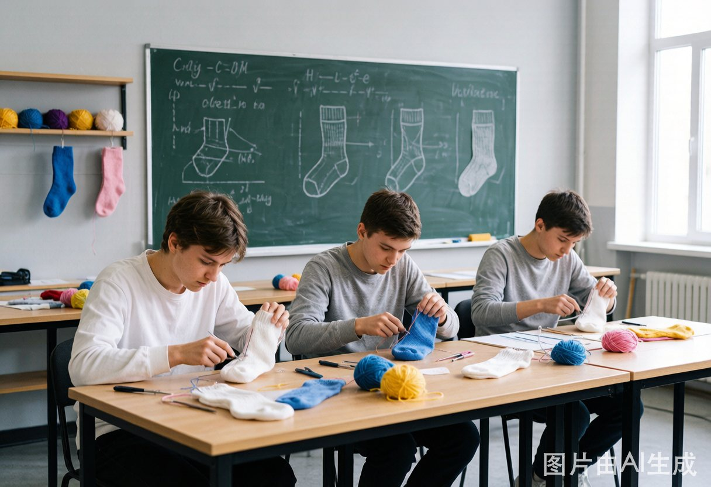

大唐袜业研学之旅
探秘袜业产业链 · 体验智能制造
智能制造工厂参观
研学日期：2026年9月15日 · 半天
袜业博物馆文化游
研学日期：2026年10月12日 · 2小时
全自动化生产线参观·织袜工艺体验

袜业发展史·文化科普·互动体验
织袜工艺体验营
亲手织袜·设计专属袜品·带走纪念
大唐袜业博物馆
展示大唐袜业40年发展历程，馆藏珍贵文物300余件，含VR全景体验区
智能制造工厂
全自动化织袜生产线，1500台智能袜机，日均产能超百万双
原料检测中心
国家级纺织品检测实验室，了解纱线品质检测全流程
浙江大学研学团
织袜工艺体验
博物馆参观

文化课堂学习